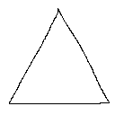
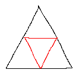
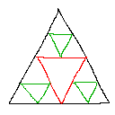
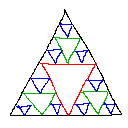
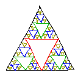
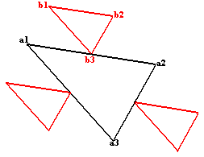
//Declaration of the drawSierpinski function. The coordinates are the 3 outer corners of the Sierpinski Triangle.
void drawSierpinski(float x1, float y1, float x2, float y2, float x3, float y3);
//Declaration of the subTriangle function, the coordinates are the 3 corners, and n is the number of recursions.
void subTriangle(int n, float x1, float y1, float x2, float y2, float x3, float y3);
//depth is the number of recursive steps
int depth = 7;
//The main function sets up the screen and then calls the drawSierpinski function
int main(int argc, char *argv[])
{
screen(640, 480, 0, "Sierpinski Triangle");
cls(RGB_White); //Make the background white
drawSierpinski(10, h - 10, w - 10, h - 10, w / 2, 10); //Call the sierpinski function (works with any corners inside the screen)
//After drawing the whole thing, redraw the screen and wait until the any key is pressed
redraw();
sleep();
return(0);
}
//This function will draw only one triangle, the outer triangle (the only not upside down one), and then start the recursive function
void drawSierpinski(float x1, float y1, float x2, float y2, float x3, float y3)
{
//Draw the 3 sides of the triangle as black lines
drawLine(int(x1), int(y1), int(x2), int(y2), RGB_Black);
drawLine(int(x1), int(y1), int(x3), int(y3), RGB_Black);
drawLine(int(x2), int(y2), int(x3), int(y3), RGB_Black);
//Call the recursive function that'll draw all the rest. The 3 corners of it are always the centers of sides, so they're averages
subTriangle
(
1, //This represents the first recursion
(x1 + x2) / 2, //x coordinate of first corner
(y1 + y2) / 2, //y coordinate of first corner
(x1 + x3) / 2, //x coordinate of second corner
(y1 + y3) / 2, //y coordinate of second corner
(x2 + x3) / 2, //x coordinate of third corner
(y2 + y3) / 2 //y coordinate of third corner
);
}
//The recursive function that'll draw all the upside down triangles
void subTriangle(int n, float x1, float y1, float x2, float y2, float x3, float y3)
{
//Draw the 3 sides as black lines
drawLine(int(x1), int(y1), int(x2), int(y2), RGB_Black);
drawLine(int(x1), int(y1), int(x3), int(y3), RGB_Black);
drawLine(int(x2), int(y2), int(x3), int(y3), RGB_Black);
//Calls itself 3 times with new corners, but only if the current number of recursions is smaller than the maximum depth
if(n < depth)
{
//Smaller triangle 1
subTriangle
(
n+1, //Number of recursions for the next call increased with 1
(x1 + x2) / 2 + (x2 - x3) / 2, //x coordinate of first corner
(y1 + y2) / 2 + (y2 - y3) / 2, //y coordinate of first corner
(x1 + x2) / 2 + (x1 - x3) / 2, //x coordinate of second corner
(y1 + y2) / 2 + (y1 - y3) / 2, //y coordinate of second corner
(x1 + x2) / 2, //x coordinate of third corner
(y1 + y2) / 2 //y coordinate of third corner
);
//Smaller triangle 2
subTriangle
(
n+1, //Number of recursions for the next call increased with 1
(x3 + x2) / 2 + (x2 - x1) / 2, //x coordinate of first corner
(y3 + y2) / 2 + (y2 - y1) / 2, //y coordinate of first corner
(x3 + x2) / 2 + (x3 - x1) / 2, //x coordinate of second corner
(y3 + y2) / 2 + (y3 - y1) / 2, //y coordinate of second corner
(x3 + x2) / 2, //x coordinate of third corner
(y3 + y2) / 2 //y coordinate of third corner
);
//Smaller triangle 3
subTriangle
(
n+1, //Number of recursions for the next call increased with 1
(x1 + x3) / 2 + (x3 - x2) / 2, //x coordinate of first corner
(y1 + y3) / 2 + (y3 - y2) / 2, //y coordinate of first corner
(x1 + x3) / 2 + (x1 - x2) / 2, //x coordinate of second corner
(y1 + y3) / 2 + (y1 - y2) / 2, //y coordinate of second corner
(x1 + x3) / 2, //x coordinate of third corner
(y1 + y3) / 2 //y coordinate of third corner
);
}
}
|
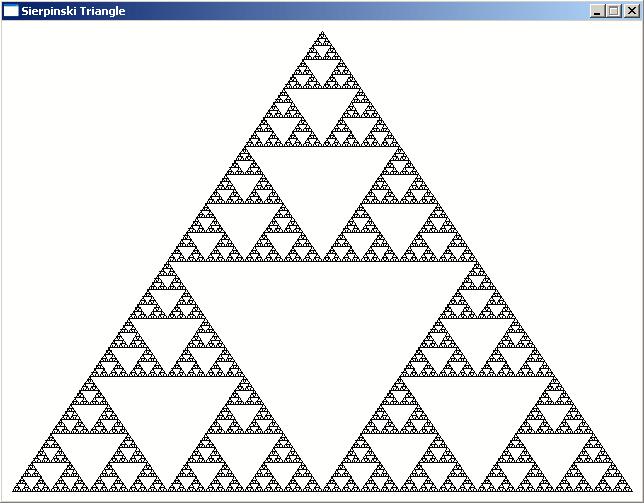
| 运算 |
结果 |
| 0 AND 0 |
0 |
| 0 AND 1 |
0 |
| 1 AND 0 |
0 |
| 1 AND 1 |
1 |
int main(int argc, char *argv[])
{
screen(256, 256, 0, "AND");
for(int y = 0; y < h; y++)
for(int x = 0; x < w; x++)
{
if(x & y) pset(x, y, RGB_White);
}
redraw();
sleep();
return 0;
}
|
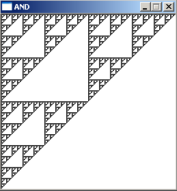
//How much pixels should be randomly chosen and drawn
#define numSteps 10000
int main(int argc, char *argv[])
{
//create the screen and make it white
screen(256, 256, 0, "Sierpinski Triangle");
cls(RGB_White);
//the 3 corners of the outer triangle
float ax = 10;
float ay = h - 10;
float bx = w - 10;
float by = h - 10;
float cx = w / 2;
float cy = 10;
//initial coordinates for the point px
float px = ax;
float py = ay;
//do the process numSteps times
for(int n = 0; n < numSteps; n++)
{
//draw the pixel
pset(int(px), int(py), RGB_Black);
//pick a random number 0, 1 or 2
switch(abs(rand() % 3))
{
//depending on the number, choose another new coordinate for point p
case 0:
px = (px + ax) / 2.0;
py = (py + ay) / 2.0;
break;
case 1:
px = (px + bx) / 2.0;
py = (py + by) / 2.0;
break;
case 2:
px = (px + cx) / 2.0;
py = (py + cy) / 2.0;
break;
}
}
//redraw, sleep and end the program
redraw();
sleep();
return(0);
}
|
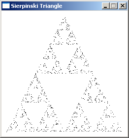
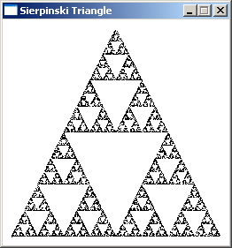
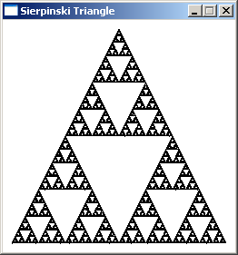
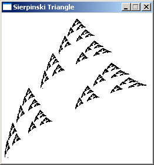
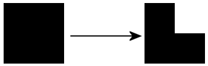
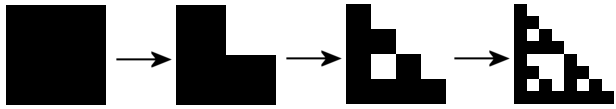
//the coordinates are 2 corners of the rectangle, n is the current recursion step
void drawSierpinski(int n, int x1, int y1, int x2, int y2);
//how much recursions maximum (after log_2(screenWidth) recursions the rectangles are smaller than a pixel)
#define maxRecursions 8
int main(int argc, char *argv[])
{
//create the screen and make it white
screen(256, 256, 0, "Sierpinski Triangle");
//start the recursive function
drawSierpinski(1, 0, 0, w - 1, h - 1);
//redraw, sleep, etc...
redraw();
sleep();
return(0);
}
void drawSierpinski(int n, int x1, int y1, int x2, int y2)
{
//draw white rectangle in the upper right part, thereby making a black L
drawRect((x1 + x2) / 2, y1, x2 - 1, (y1 + y2) / 2 - 1, RGB_White);
//call itself 3 times again, now for the 3 new rectangles in the L shape
if(n < maxRecursions)
{
drawSierpinski(n + 1, x1, y1, (x1 + x2) / 2, (y1 + y2) / 2);
drawSierpinski(n + 1, x1, (y1 + y2) / 2, (x1 + x2) / 2, y2);
drawSierpinski(n + 1, (x1 + x2) / 2, (y1 + y2) / 2, x2, y2);
}
}
|
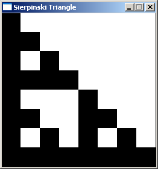
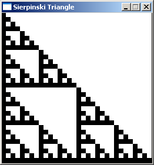
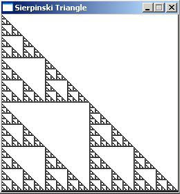
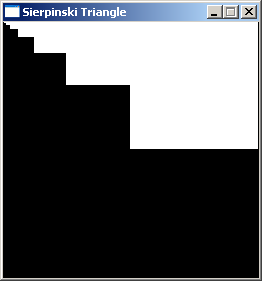
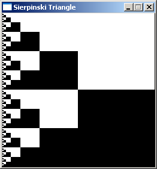
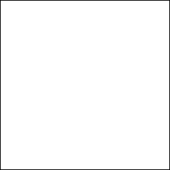
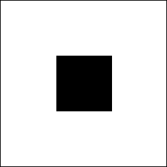
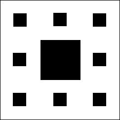
//the coordinates are 2 corners of the rectangle, n is the current recursion step
void drawCarpet(int n, float x1, float y1, float x2, float y2);
//how much recursions maximum
#define maxRecursions 6
int main(int argc, char *argv[])
{
//create the screen and make it white, use powers of 3 for the screen size for best result
screen(243, 243, 0, "Sierpinski Carpet");
cls(RGB_White);
//start the recursive function
drawCarpet(1, 0, 0, w - 1, h - 1);
//redraw, sleep, etc...
redraw();
sleep();
return(0);
}
void drawCarpet(int n, float x1, float y1, float x2, float y2)
{
//draw black rectangle with 1/3th the size in the center of the given coordinates
drawRect(int((2 * x1 + x2) / 3.0), int((2 * y1 + y2) / 3.0), int((x1 + 2 * x2) / 3.0) - 1, int((y1 + 2 * y2) / 3.0) - 1, RGB_Black);
//call itself 8 times again, now for the 8 new rectangles around the one that was just drawn
if(n < maxRecursions)
{
drawCarpet(n + 1, x1 , y1 , (2 * x1 + x2) / 3.0, (2 * y1 + y2) / 3.0);
drawCarpet(n + 1, (2 * x1 + x2) / 3.0, y1 , (x1 + 2 * x2) / 3.0, (2 * y1 + y2) / 3.0);
drawCarpet(n + 1, (x1 + 2 * x2) / 3.0, y1 , x2 , (2 * y1 + y2) / 3.0);
drawCarpet(n + 1, x1 , (2 * y1 + y2) / 3.0, (2 * x1 + x2) / 3.0, (y1 + 2 * y2) / 3.0);
drawCarpet(n + 1, (x1 + 2 * x2) / 3.0, (2 * y1 + y2) / 3.0, x2 , (y1 + 2 * y2) / 3.0);
drawCarpet(n + 1, x1 , (y1 + 2 * y2) / 3.0, (2 * x1 + x2) / 3.0, y2 );
drawCarpet(n + 1, (2 * x1 + x2) / 3.0, (y1 + 2 * y2) / 3.0, (x1 + 2 * x2) / 3.0, y2 );
drawCarpet(n + 1, (x1 + 2 * x2) / 3.0, (y1 + 2 * y2) / 3.0, x2 , y2 );
}
}
|
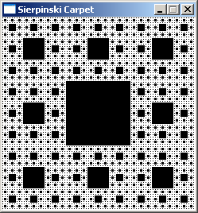
int main(int argc, char *argv[])
{
screen(243, 243, 0, "Sierpinski Carpet");
for(int y = 0; y < h; y++)
for(int x = 0; x < w; x++)
{
if
(
//Not both the first (rightmost) digits are '1' in base 3
!(
(x / 1) % 3 == 1
&& (y / 1) % 3 == 1
)
&&
//Not both the second digits are '1' in base 3
!(
(x / 3) % 3 == 1
&& (y / 3) % 3 == 1
)
&&
//Not both the third digits are '1' in base 3
!(
(x / 9) % 3 == 1
&& (y / 9) % 3 == 1
)
&&
//Not both the fourth digits are '1' in base 3
!(
(x / 27) % 3 == 1
&& (y / 27) % 3 == 1
)
&&
//Not both the fifth digits are '1' in base 3
!(
(x / 81) % 3 == 1
&& (y / 81) % 3 == 1
)
)
pset(x, y, RGB_White);
}
redraw();
sleep();
return(0);
}
|
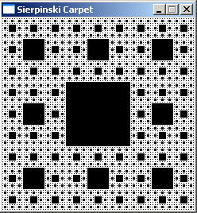
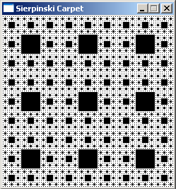
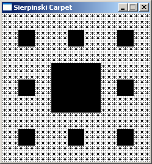